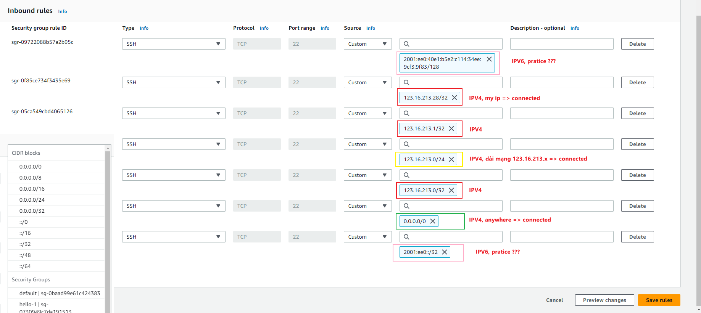
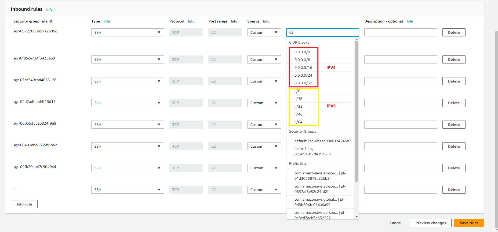
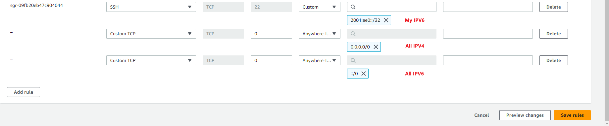
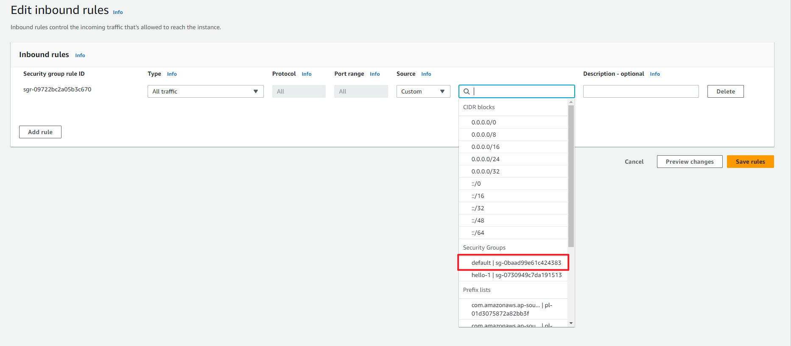
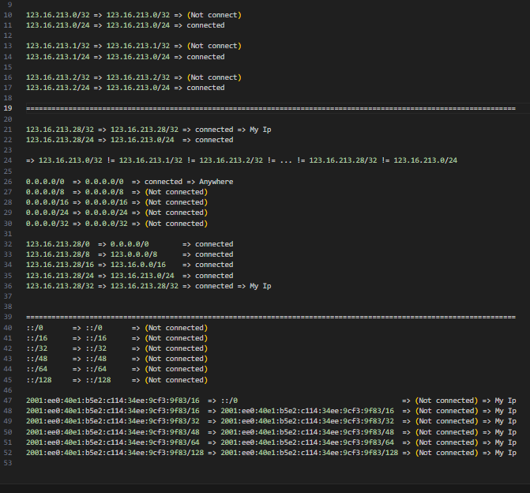

Bài này cũng rất là quan trọng, bởi vì bạn phải nắm được cách phân quền File và Folder
Ví dụ như sau này bạn tạo một Web Server, nếu như bạn không biết phân quyền File và Folder thì bạn sẽ rất dễ có thể bị hacker tấn công
Hoặc là những thư mục dữ liệu của mình bạn không biết phân quyền thì cũng sẽ bị kẻ xấu đột nhập vào các thư mục đó và ăn cắp dữ liệu của bạn
Okie để bắt đầu, thì đầu tiên chúng ta sẽ truy cập vào Server, thì chúng ta sẽ đi từng bước 1
Bước đầu tiền chúng ta sẽ vào Server
/root === /home/ec2-user === /home/trung === /home/truong
$ ssh -i "hello.pem" soc@ec2-54-179-111-240.ap-southeast-1.compute.amazonaws.com
soc@ec2-54-179-111-240.ap-southeast-1.compute.amazonaws.com: Permission denied (publickey,gssapi-keyex,gssapi-with-mic).
Custom IP
ssh ec2-user@ec2-54-179-111-240.ap-southeast-1.compute.amazonaws.com





chmod 400 tho.pem
chmod 700 .ssh (rwx------)
chmod 755 folder name (rwxr-xr-x)
Switch User, change ec2-user default
Manage users on your Linux instance
How to change the default aws instance user?
mkdir, mkdir -p, rm, rm -r, rm -R, rm -f, rm -rf, rm -Rf, mv, cp, cp -rf, cp -Rf
Permission
Tạo nhóm đi, ví dụ bây giờ trong công ty mình sẽ phân ra là nhóm kết toán, nhóm nhân sự và nhóm IT
Mỗi một nhóm này sẽ lưu dữ liệu riêng của từng nhóm đó và user của các nhóm khác thì sẽ không được phép truy cập vào các nhóm chéo nhau
để có thể xem được dữ liệu của nhau
groupadd ketoan
groupadd nhansu
Phân quyền File và Folder ở trên Linux, trên Linux ý thì để kiểm tra quyền File và Folder hiện tại đang là gì thì chúng ta sẽ dùng lệnh ls -la || ll -a
mkdir ketoan-data
user/group/other (default public user)
Set permission cho File và Folder
chmod 400 tho.pem
chmod -f 400 tho.pem
chmod -R thu muc || chmod -Rf thu muc
pwd
ll -a
chown -Rf root:ketoan ketoan-data || chown -Rf :ketoan ketoan-data
usermod -a -G ketoan trung (option group name có thể nhấn tab để nhận hit group name)
usermod -a -G ketoan truong
id trung
[root@ip-172-31-28-169 hanam]# groups trung
trung : trung ketoan
[root@ip-172-31-28-169 hanam]# groups truong
truong : truong ketoan
[root@ip-172-31-28-169 hanam]# groups ec2-user
ec2-user : ec2-user adm wheel systemd-journal
[root@ip-172-31-28-169 hanam]# groups root
root : root
[root@ip-172-31-28-169 hanam]#
# usermod -aG postgres tecmint
# groups tecmint
How to Add or Remove Linux User From Group
[root@ip-172-31-28-169 hanam]# gpasswd -d trung ketoan
Removing user trung from group ketoan
[root@ip-172-31-28-169 hanam]# groups trung
trung : trung
[root@ip-172-31-28-169 hanam]#
$ man groups
$ man usermod
$ man gpasswd